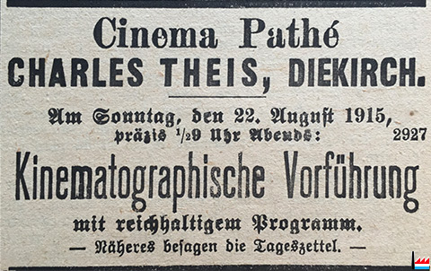

Hotelier Nicolas Medinger-Kohner and his son Felix Medinger were now firmly in charge of The Royal Bio Comp. (founded
1907 by showman H. Hirdt and, to replace the 350-seater Cinéma moderne of 1907, Felix Medinger built the new 600-seater Kinematograph-Theatre,
still at the family hotel, the Hôtel de Luxembourg.
The Royal Bio Comp. Kinematograph-Theater, Hôtel de Luxembourg
A Pathé film-unit of about fifteen people, under artistic director Charles Decroix, was in the Grand Duchy to shoot a series of
photoplays in 1910, the story of which is related elsewhere and the films were shown at the
Royal Bio Comp. in September-October of that year. The luxembourgeois were a shade disappointed at the fact that these dramas, though
certainly filmed at the most picturesque spots in the town and in the Duchy, were not anywhere stated explicitly to be in Luxemburg,
so that they might prove to be the important lure for tourists that the director Decroix, who was from Alsace and could speak perfect
German, had disingenuously promised them. It is possible that two documentaries filmed in Luxemburg were intended, at least in part,
to compensate for this. One, Le Grand-Duché de Luxembourg is known from a 9.5mm Pathé-Baby produced for the Pathé home-view
system in the early twenties and was also published in Pathé Revue in December 1923 (« Ce film nous montre quelques aspects
de cette capitale qui ne manque pas de pittoresque » This film shows us some aspects of the capital - ie the town of Luxembourg
- which are not lacking in the picturesque). The second film, Sur les remparts, survives and has been restored but I have
not seen a copy. It is possible that they are in practice the same film (although the title suggests not) or that the two films
were made there at around the same time (this film supposedly dates from the pre-war period). They may, however, have been made
later, even during the war, when a Cinéma Pathé opened in Luxemburg (1915) and when the Grand Duchy had assumed a certain importance
as a largely German-speaking enclave where cautious anti-German propaganda could be diffused.
Charles Thies' Cinéma Pathé, Diekirch, Luxemburg, 1915.

In the meantime, Felix Medinger would himself take matters in hand, making three films
for the Royal Bio Comp. in 1912, of which one, Das malerische Luxemburg, also known as Luxembourg pittoresque
and Picturesque Luxemburg, was very specifically designed to make the world aware of the Duchy's tourist potential.
Felix Medinger, Das malerische Luxemburg (The Royal Bio Comp., 1910)